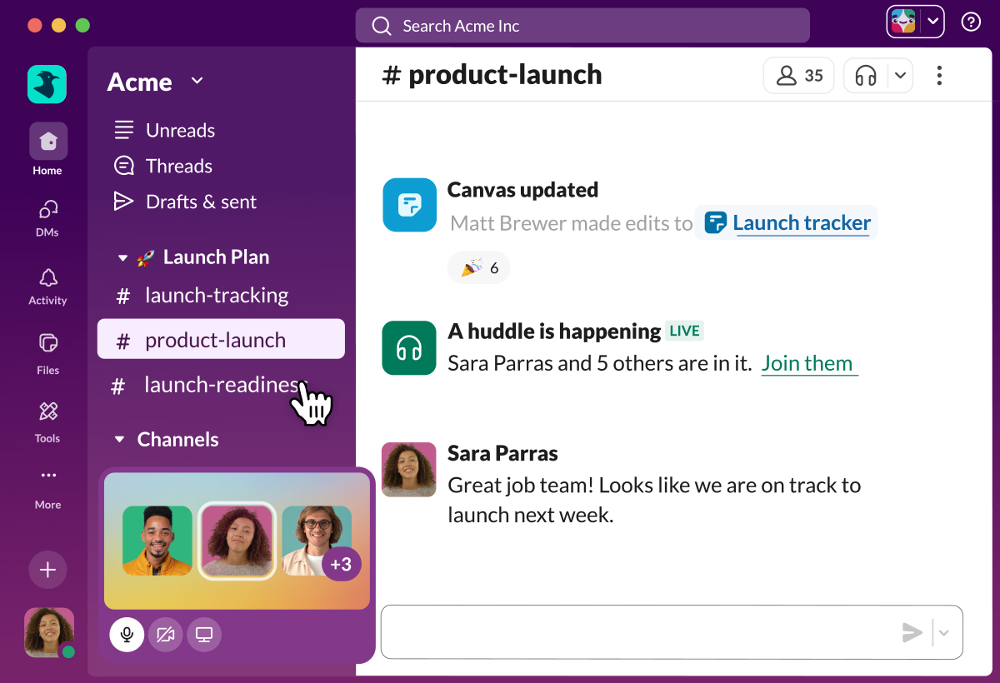
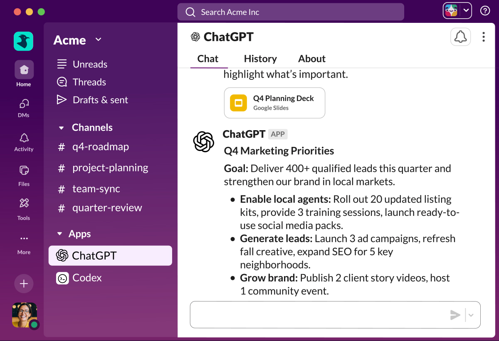

Slack is your team's
collective 🧠 brain.
Move faster and work smarter with
people, apps, and AI at your side.


Plan launches

Reimagine what’s possible with AI and agents.
AI in Slack doesn’t make you think, it helps you do. It summarizes and searches based on actual conversations, and with it, makes every app and agent more helpful and contextually aware than ever.
Knowledge
KNOWLEDGE
Give everyone instant context.
Get access to every file, decision, and coverstaion, so you can build on past work instead of recreating it.

Meet Slackbot: Your personal agent for work.
Slackbot isn’t just any AI. It’s AI that knows your team inside and out. It adapts to your style, finds what you need, and helps work get done faster.
Learn more about SlackbotOne search to rule them all.
Bring CRM data to the conversation.
97 min
Average time users can save weekly with AI in Slack1
PEOPLE
Let your people connect like people.
Slack’s conversational UI makes collaborating more approachable, whether you're working with a colleague or an agent.

Meet Slackbot: Your personal agent for work.
Slackbot isn’t just any AI. It’s AI that knows your team inside and out. It adapts to your style, finds what you need, and helps work get done faster.
Learn about channelsWhen talking is easier than typing...
Bring conversations out of the inbox.
ANTHROPIC
"Slack has been essential to our growth, our speed, and our ability to stay aligned as we scale"
Kate Jenson, Head of Americas, Anthropic
PROCESS
Manage all your work from one place.
Automate daily stand-ups, project updates, and approvals so your team can focus on growth instead of guesswork.

Anyone can automate in Slack.
By click or by code, Slack makes it easy for anyone to build time-saving automations of their own.
Learn about workflowsManage projects and tasks.
A simpler way to get started.
35%
Increase in time saved due to automations for Slack users2
PLATFORM
Secure. Scalable. Silo-free.
Our flexible, open platform is purpose-built for bringing the best agents and AI to every business, and can be tailored to fit however your teams work best.

From Atlassian to Zoom.
By click or by code, Slack makes it easy for anyone to build time-saving automations of their own.
See all integrationsCustomize Slack to fit your needs.
Work without worry.
Vercel
“Work starts in conversation. That’s why we see Slack as the natural place to build our agents.”
Guillermo Rauch, CEO, Vercel
The most innovative companies run their business in Slack.

We're in the business of growing businesses.
90%
of users say Slack helps then stay more connected1
89%
of users say Slack improves communication5
36%
increase in employee engagement5
Millions of people love to work in Slack.
700M
Messages sent daily1
1.7M
Apps actively used each week1
4M
Slack connect users working directly with external teams each week1
3M
Daily Workflows1
Don't just take our word for it.
Slack is a leader in over 314 G2 market reports.6


Your Slack deep dive starts here.

Event
Ready for the future of AI in Slack?
Watch on Demand
Sources